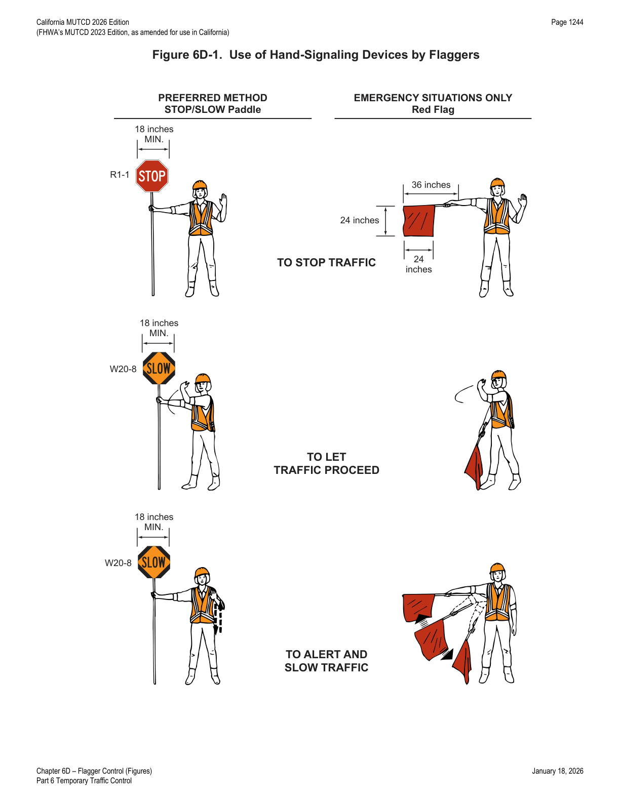

Part 6 · Temporary Traffic Control · Chapter 6D
Flagger Control
Qualifications and training for flaggers, the STOP/SLOW paddle and flag as hand-signaling devices, flashlight signaling at night, standard flagging procedures, and flagger station placement.
6D.01Qualifications for Flaggers
01 Because flaggers are responsible for public safety and make the greatest number of contacts with the public of all highway workers, they should be trained in proper traffic control practices and public contact techniques. Flaggers should be able to satisfactorily demonstrate the following abilities:
- Ability to receive and communicate specific instructions clearly, firmly, and courteously;
- Ability to move and maneuver quickly in order to avoid danger from errant vehicles;
- Ability to control signaling devices (such as paddles and flags) in order to provide clear and positive guidance to drivers approaching a TTC zone in frequently changing situations;
- Ability to understand and apply proper traffic control practices, sometimes in stressful or emergency situations; and
- Ability to recognize dangerous traffic situations and warn workers in sufficient time to avoid injury.
02 Flaggers shall be trained in the proper fundamentals of flagging moving traffic before being assigned as flaggers. Signaling directions used by flaggers shall conform to the details shown in Figure 6D-1. The training and instructions shall be based on this Manual and work site conditions and shall also include the following:
- Flagger equipment which must be used;
- Layout of the work zone and flagging station;
- Methods to signal traffic to stop, proceed, or slow down;
- Methods of one-way traffic control;
- Trainee demonstration of proper flagging methodology and operations;
- Emergency vehicles traveling through the work zone;
- Handling emergency situations;
- Methods of dealing with hostile drivers;
- Flagging procedures when a single flagger is used (when applicable).
- 03Documentation of the training shall be maintained as required by the Injury Illness and Prevention Program of the General Industry Safety Order in the California Code of Regulations (Title 8, Division 1, Chapter 4, Subchapter 7, § 3203).
- 04Flaggers shall be trained by persons with the qualifications and experience necessary to effectively instruct the employee in the proper fundamentals of flagging moving traffic.
- 05Refer to the Construction Safety Order in the California Code of Regulations (Title 8, Division 1, Chapter 4, Subchapter 4, Article 11, § 1599 — Flaggers) for flagger training. Refer to Section 1A.05 for information regarding this publication.
- 06Refer to Caltrans' Flagging Instruction Handbook for additional information regarding Chapter 6D topics. Refer to Section 1A.05 for information regarding this publication.
6D.02STOP/SLOW Paddle for Hand-Signaling
- 02The STOP/SLOW paddle (R1-1 and W20-8) shall have an octagonal shape on a rigid handle. When used at night, the STOP/SLOW paddle shall be retroreflectorized.
- 02aThe sign retroreflectivity shall be maintained at or above the minimum levels in Table 2A-5.
- 03A STOP/STOP or a SLOW/SLOW paddle may be used in certain situations (see Section 6D.05), provided the device meets the size and shape requirements for the STOP/SLOW paddle.
- 04The STOP/SLOW paddle should be fabricated from light semi-rigid material. The bottom of the STOP/SLOW sign portion of the paddle should be a minimum of 6 feet above the pavement when mounted on a rigid staff.
- 05The optimum method of displaying a STOP or SLOW message is to place the STOP/SLOW paddle on a rigid staff that is tall enough that when the end of the staff is resting on the ground, the message is high enough to be seen by approaching or stopped traffic.
- 05aThe 24 × 24-inch size of the STOP/SLOW paddle may be used where greater emphasis is needed and speeds are 30 mph or more.
- 06The STOP/SLOW paddle may be modified to improve conspicuity by incorporating either white or red flashing lights on the STOP face, and either white or yellow flashing lights on the SLOW face. The flashing lights may be arranged in any of the following patterns:
- Two white or red lights, one centered vertically above and one centered vertically below the STOP legend; and/or two white or yellow lights, one centered vertically above and one centered vertically below the SLOW legend;
- Two white or red lights, one centered horizontally on each side of the STOP legend; and/or two white or yellow lights, one centered horizontally on each side of the SLOW legend;
- One white or red light centered below the STOP legend; and/or one white or yellow light centered below the SLOW legend;
- A series of eight or more small white or red lights no larger than ¼ inch in diameter along the outer edge of the paddle, arranged in an octagonal pattern at the eight corners of the border of the STOP face; and/or a series of eight or more small white or yellow lights no larger than ¼ inch in diameter along the outer edge of the paddle, arranged in a diamond pattern along the border of the SLOW face; or
- A series of white lights forming the shapes of the letters in the legend.
- 07If flashing lights are used on the STOP face of the paddle, their colors shall be all white or all red. If flashing lights are used on the SLOW face of the paddle, their colors shall be all white or all yellow.
- 08If more than eight flashing lights are used, the lights shall be arranged such that they clearly convey the octagonal shape of the STOP face of the paddle and/or the diamond shape of the SLOW face of the paddle.
- 09If flashing lights are used on the STOP/SLOW paddle, the flash rate shall be at least 50, but not more than 60, flashes per minute.
6D.03Flag for Hand-Signaling
- 01Use of flags shall be limited to emergency situations.
- 02Flags, when used (for emergency situations only), shall be red or fluorescent orange-red in color, shall be a minimum of 24 inches square, and shall be securely fastened to a staff that is approximately 36 inches in length.
- 03The free edge of a flag should be weighted so the flag will hang vertically, even in heavy winds.
- 04When used at nighttime (for emergency situations only), flags shall be retroreflectorized.
6D.04Flashlight for Hand-Signaling
- 01When flagging in an emergency situation at night in a non-illuminated flagger station, a flagger may use a traffic baton made of a flashlight with a red glow cone to supplement the STOP/SLOW paddle or flag.
02 When a flashlight is used for flagging in an emergency situation at night in a non-illuminated flagger station, the flagger shall hold the flashlight in the left hand, shall hold the paddle or flag in the right hand as shown in Figure 6D-1, and shall use the flashlight in the following manner to control approaching road users:
- To inform road users to stop, the flagger shall hold the flashlight with the left arm extended and pointed down toward the ground, and then shall slowly wave the flashlight in front of the body in a slow arc from left to right such that the arc reaches no farther than 45 degrees from vertical.
- To inform road users to proceed, the flagger shall point the flashlight at the vehicle's bumper, slowly aim the flashlight toward the open lane, then hold the flashlight in that position. The flagger shall not wave the flashlight.
- To alert or slow traffic, the flagger shall point the flashlight toward oncoming traffic and quickly wave the flashlight in a figure-eight motion.
6D.05Flagger Procedures
- 01The use of paddles and flags by flaggers is illustrated in Figure 6D-1.
- 02Flaggers shall use a STOP/SLOW paddle, a flag (for emergency situations only), or an Automated Flagger Assistance Device (AFAD) (see Sections 6L.02 through 6L.04) to control road users approaching a TTC zone. The use of hand movements alone without a paddle, flag, or AFAD to control road users shall be prohibited when controlling traffic in a one-lane two-way operation, except when the control is provided by emergency responders at incident scenes as described in Section 6O.01 or provided by uniformed law enforcement officers.
03 The following methods of signaling with a paddle shall be used:
- To stop road users, the flagger shall face road users and aim the STOP paddle face toward road users in a stationary position with the arm extended horizontally away from the body. The free arm shall be held with the palm of the hand above shoulder level toward approaching traffic.
- To direct stopped road users to proceed, the flagger shall face road users with the SLOW paddle face aimed toward road users in a stationary position with the arm extended horizontally away from the body. The flagger shall motion with the free hand for road users to proceed.
- To alert or slow traffic, the flagger shall face road users with the SLOW paddle face aimed toward road users in a stationary position with the arm extended horizontally away from the body.
- 04To further alert or slow traffic, the flagger holding the SLOW paddle face toward road users may motion up and down with the free hand, palm down.
05 The following methods of signaling with a flag (for emergency situations only) shall be used:
- To stop road users, the flagger shall face road users and extend the flag staff horizontally across the road users' lane in a stationary position so that the full area of the flag is visibly hanging below the staff. The free arm shall be held with the palm of the hand above shoulder level toward approaching traffic.
- To direct stopped road users to proceed, the flagger shall face road users with the flag and arm lowered from the view of the road users, and shall motion with the free hand for road users to proceed. Flags shall not be used to signal road users to proceed.
- To alert or slow traffic, the flagger shall face road users and slowly wave the flag in a sweeping motion of the extended arm from shoulder level to straight down without raising the arm above a horizontal position. The flagger shall keep the free hand down.
- 06The flagger should stand either on the shoulder adjacent to the road user being controlled or in the closed lane prior to stopping road users. A flagger should only stand in the lane being used by moving road users after road users have stopped. The flagger should be clearly visible to the first approaching road user at all times, and also to other road users. The flagger should be stationed sufficiently in advance of the workers to warn them (for example, with audible warning devices such as horns or whistles) of approaching danger by out-of-control vehicles. The flagger should stand alone, away from other workers, work vehicles, or equipment.
- 07In certain conditions, it may be more appropriate for a flagger to use a STOP/STOP or a SLOW/SLOW paddle to convey the appropriate message to approaching road users and avoid confusing those that are approaching the operation from the opposing direction.

In practice, the paddle is the default device for every flagging assignment — flags are reserved strictly for emergencies, and even then they can never be used to signal "proceed" (the flagger simply lowers the flag and motions with the free hand). A single flagger relying on hand movements alone, with no paddle, flag, or AFAD, is prohibited for one-lane two-way control except for law enforcement or incident responders.
6D.06Flagger Stations
- 01Except as provided in Paragraph 2 of this Section, flagger stations shall be located such that approaching road users will have sufficient distance to stop at an intended stopping point.
- 02If sufficient stopping sight distance is not achievable, the location of the flagger station may be modified based on engineering judgment.
- 03The distances shown in Table 6B-2, which provides information regarding the stopping sight distance as a function of speed, may be used for the location of a flagger station. These distances may be increased for downgrades (refer to Table 6B-2(CA)) and other conditions that affect stopping distance.
- 04Flagger stations should be located such that an errant vehicle has additional space to stop without entering the work space. The flagger should identify an escape route that can be used to avoid being struck by an errant vehicle.
- 05Except in emergency situations, flagger stations shall be preceded by an advance warning sign or signs. Except in emergency situations, flagger stations shall be illuminated when flagging is used at night.
- 06Refer to Construction Safety Orders in the California Code of Regulations (Title 8, Division 1, Chapter 4, Subchapter 4, Article 3, § 1523 — Illumination, and § 1599 — Flaggers). Refer to Section 1A.05 for information regarding this publication.
In practice, engineers place flagger stations using the Table 6B-2 stopping-sight-distance values as a starting point (e.g., 305 ft at 40 mph on a level road), then add distance for downgrades per Table 6B-2(CA) — an escape route and a mandatory advance warning sign or illumination (at night) are non-negotiable except during genuine emergencies.
★ Key Takeaways — Chapter 6D
- Flaggers must be trained before assignment, with documented training covering equipment, work-zone layout, stop/proceed/slow signaling, one-way control, emergency vehicles, hostile drivers, and single-flagger procedures; documentation must be kept per Title 8 CCR § 3203.
- The STOP/SLOW paddle (R1-1/W20-8) is the preferred hand-signaling device — octagonal, rigid-handled, retroreflectorized at night, mounted so the sign bottom is a minimum of 6 feet above pavement, with an optional 24×24-inch size at 30-mph-plus locations and optional flashing lights (50–60 flashes/min, all-white/red on STOP, all-white/yellow on SLOW).
- Flags are limited strictly to emergency situations: minimum 24 inches square, red or fluorescent orange-red, on a roughly 36-inch staff, retroreflectorized at night — and flags can never be used to signal "proceed."
- A flashlight with a red glow cone may supplement paddle/flag signaling at night in non-illuminated emergency flagger stations, held in the left hand with specific stop/proceed/alert motions.
- Hand movements alone (no paddle, flag, or AFAD) are prohibited for one-lane two-way control except by law enforcement or incident responders.
- Flagger stations require sufficient stopping sight distance (Table 6B-2 / 6B-2(CA) for downgrades), an identified escape route, and — except in emergencies — an advance warning sign and nighttime illumination.